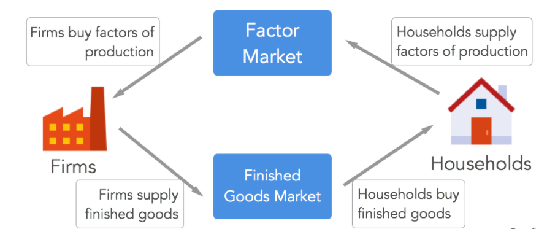
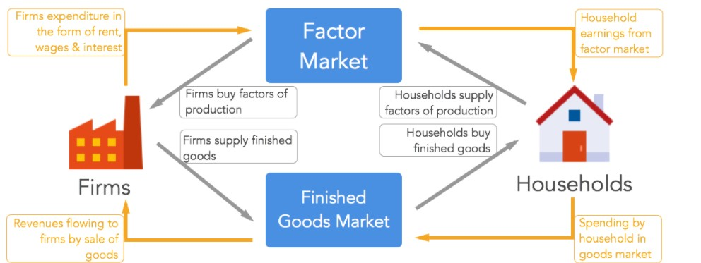
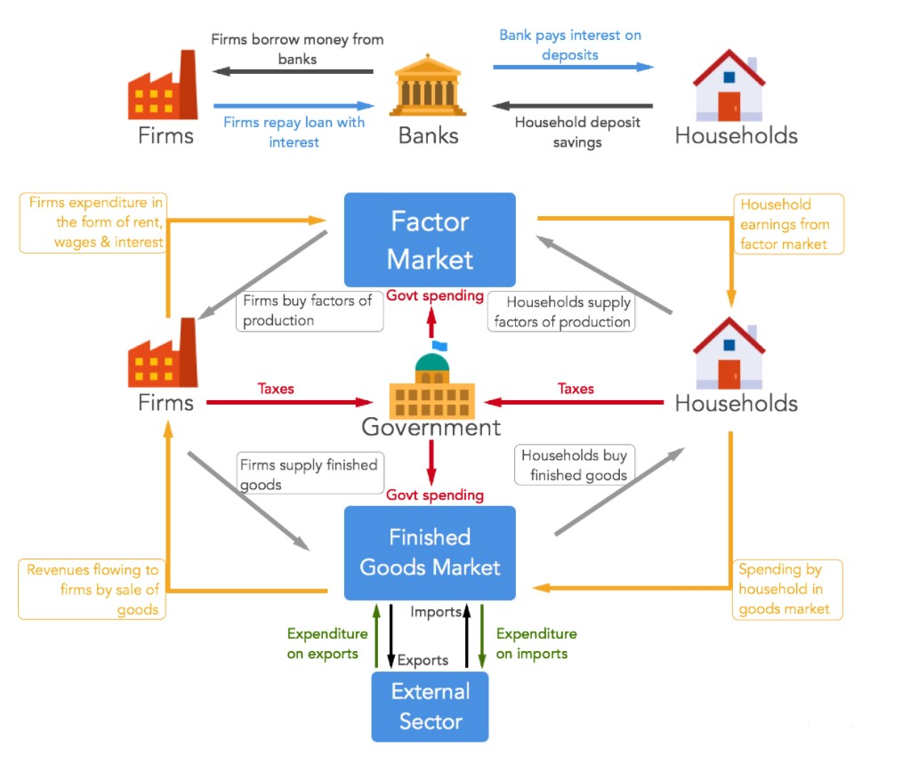
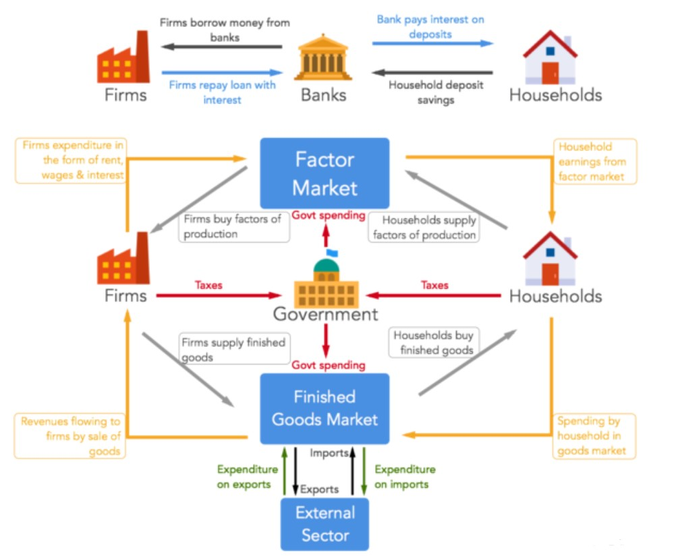

How you control the entire production process
Market is a very common term used by all of us on a daily basis. Any place enabling buyers and
sellers of a particular good/service to interact with each other is called market. If there is a place
where buyers and sellers of sugar are coming together and trading with each other, it will be
called a sugar market. Similarly, if buyers and sellers of furniture are trading with each other on
an online portal, then that portal is also a furniture market.
Suppose you want to set up a cloth manufacturing unit. First thing that you would need is a piece
of land to setup the factory. Once you have the land, you need capital. By capital, we are referring
to related infrastructure like factory building, machines and software systems. Finally, you would
be needing people to work in your factory, called labor. These are the three essential things that
are always required for production and are called factors of production. Now the next question,
where will you obtain them from? You would be buying these factors from other individuals. You
can very well argue that you can buy them from other firms as well, but ultimately somebody
would have bought it from individuals.
Let’s divide the whole economy into two parts, firms and households. All land, capital and labour
ultimately belongs to households, let’s consider these households as individual families. Firms will
be buying these 3 factors of production from households. So we have firms who are the buyer’s,
households are the seller’s and factors of production as the product. As per our definition of
market, this setup would be called a factor market.
Let’s now revisit our example where you were trying to setup a cloth manufacturing unit. Suppose,
now the factory is set up and you begin manufacturing. Who will buy your products? Again it’s the
households (individuals) who would be buying your products in the cloth market. Let’s broaden
our example and think about who would be buying all the finished goods manufactured in the
economy, it will be the households who would be buying these products. Thus, in finished goods
market, firms are the sellers and households are the buyer’s.
As we saw, firms buy factors of production from households in factor market. Then they
manufacture finished goods using these factors of production and sell it back to households in
finished goods market. Full circular process can be seen in the figure below.

Let’s now try and understand how money flows in the whole process.
Spend.. it's all coming back to you
In the previous article, “Circular flow of products” we saw how products flow in the economy.
Firms buy factors of production from households in the factor market and sell finished goods
back to them in the finished goods market.
When firms buy factors of production (land, capital and labor) from the factor market, they need
to reimburse households for the same. Thus, in factor market money is flowing from firms to
households. Money spent by firms is their cost of production and earnings for the households. In
the finished goods markets, firms are selling their products to households, so money is flowing
from households to firms. As shown in the diagram below money and products flow in opposite
directions, money moves clockwise and products flow anti clockwise. The cumulative amount
spent by households is equal to the revenue of the firms. The difference between the amount
earned by firms in the finished goods market and the money spent by firms in the factor market is
the firm’s profit.

The diagram also makes it obvious that expenditure of one entity is equal to total income of
another; applying the same working to the entire economy, total expenditure in the economy is
always equal to the total income.
Let’s talk a little more about the income received by households. In the factor market, households
earn various kinds of income from firms. Income received for renting out land is termed rent. In
return for labor provided by household’s, they receive salary/wages and capital earns interest. It is
easy to understand how land would earn rent and labor would earn wages/salary, but
understanding how capital earns interest is a little difficult.
Let’s now see how capital, which we earlier defined as machinery, tools and technology earns
interest for households.
How your savings finance corporate investment
To complete our understanding of circular flow, lets now learn about leakages from the same. 3
new entities will now be introduced into the circular flow to explain how they create leakages.

1.Introducing Government
The first entity that is being introduced is Government and it is at the center of the circular flow.
Government collects taxes from both individuals and firms. A part of the money received by
individuals in factor market, in exchange for land, labor and capital, will be collected by the
government as tax. Similarly, a part of the money received by firms in return for finished goods
will be collected by the government as corporate tax. Government collects taxes so that the
amount can be spent for public welfare by creating public goods. Public goods are goods and
services available and useful to all members of the society. This usually includes roads, ports,
railways, schools & colleges, hospitals etc.
2.Introducing External Sector
External sector is linked to the finished goods market. Foreign entities buying finished goods
manufactured in a country, say India, i.e. exports, results in injection of money into the economy.
Similarly, Indians buying foreign finished goods, i.e imports, results in money flowing out of the
economy.
3.Introducing Financial Sector
Financial sector is linked to the factor market. In our previous article, we mentioned that
expenditure by firms on capital items like machinery, tools and technology in factor market results
in interest income for households. Households earn rent and wages from factor market. A part of
this earning is saved in banks for future needs and only remaining balance is spent in finished
goods market. This act of saving, results in a leakage and money flows out of the circular flow.
borrow money from banks in order to fund their capital related expenditure. This way
money is again injected into the economy and in the process firms pay interest to banks for
borrowing money. Banks pass on some part of that interest earned to households, in return for
their funds. Thus households are saving funds and depositing the same in banks. This
kitty is then lent out by banks to firms, to fund their capital needs. So in a roundabout way
households enable firms to buy capital and in the process earn interest. Banks facilitate the entire
process.
Now that our understanding of circular flow is complete, we can easily use the same to learn how
GDP is measured in any economy.
The recipe
Understanding how to measure gross domestic produce (GDP) becomes very easy after learning
circular flow of income. We recommend reading our previous three articles on circular flow of
products and money before continuing on. As discussed in an earlier article, GDP is the value of
final goods and services produced domestically in a given time period. When we say GDP of India
was USD 2.3 trillion in financial year 2015, we mean that total value of all goods and services
produced in the Indian economy between April 2014 and March 2015 was USD 2.3 trillion.
In order to measure GDP, we need to calculate the expenditure incurred on producing all the
goods and services. Obviously, goods and services produced in the economy will get consumed
generating income for producers. From our previous article on circular flow of income we know
that income is equal to expenditure. So if we can measure the total spending on goods and
services in the economy, we will be able to arrive at the total GDP figure. Hence we can either use
the total expenditure or total income approach to calculate total GDP.

Let’s discuss the expenditure approach. From the above diagram, we can see that there are 4
major spenders in the economy. Households are spending on purchasing goods and services
produced by firms, firms are spending on their factor requirements, Government is spending to
create public goods and finally foreigners are spending to buy domestic goods.
Here, C is the consumption by households, I is defined as the investment by firms, G is the
government expenditure and X-M is export minus imports. This is how GDP is measured in the
expenditure approach.
If any of the above 4 things increase, GDP of the country will also increase. If households are
consuming more because of rising levels of income, then GDP will increase. If firms are investing
more, because borrowing money has become easy due to low interest rates, then GDP will
increase. If Government is spending more on public goods, then GDP will increase. Finally, if
exports are rising faster than imports, even then GDP will increase.
The above concept will become clearer in the next posts. Read on.